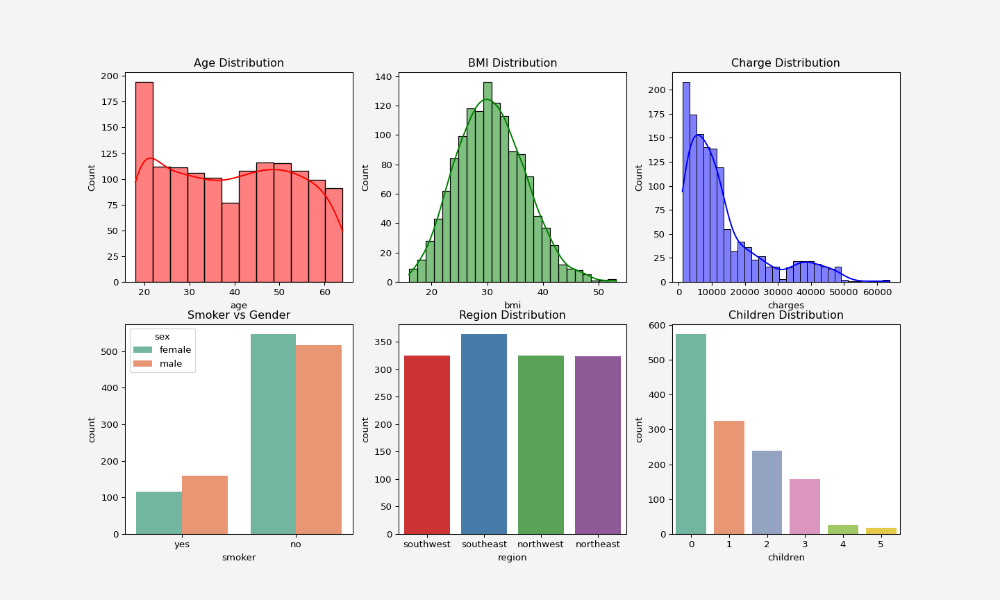

import pandas as pd
insurance = pd.read_csv('insurance.csv')
insurance.sample(5, random_state=111)Insurance Cost Forecast by using Linear Regression
Data Gathering, Defining Stakeholders and KPIs
Data Loading
Exploratory Data Analysis (EDA)
Data Information
insurance.info()No missing data. Total 1338 observations.
Data Description
Statistical properties of the non-categorical variables
print(insurance.describe())Data visualization
Distribution of the features and target
import seaborn as sns
import matplotlib.pyplot as plt
fig, axes = plt.subplots(2,3,figsize = (15,9))
sns.histplot(insurance['age'], color='red', kde=True, ax= axes[0, 0]).set_title('Age Distribution')
sns.histplot(insurance['bmi'], color='green', kde=True, ax= axes[0,1]).set_title('BMI Distribution')
sns.histplot(insurance['charges'],color='blue', kde=True, ax= axes[0,2]).set_title('Charge Distribution')
sns.countplot(x='smoker', data=insurance, hue='sex', palette='Set2', ax=axes[1,0]).set_title('Smoker vs Gender')
sns.countplot(x=insurance['region'], hue=insurance['region'], palette='Set1', ax=axes[1,1]).set_title('Region Distribution')
sns.countplot(x=insurance['children'], hue=insurance['children'],legend=False,palette='Set2', ax=axes[1,2]).set_title('Children Distribution')
plt.gcf().patch.set_facecolor('#f4f4f4')

Relationship of the features and target
fig, axes = plt.subplots(1,2, figsize=(9.5,4))
g=sns.stripplot(data=insurance, x='smoker', y='charges', hue='smoker' ,palette=['blue', 'orange'], legend=True, ax=axes[0])
g.set_yticklabels(['0k','10k','20k','30k','40k','50k','60k','65k'])
axes[1].scatter(insurance.loc[insurance.smoker=='yes'].bmi,
insurance.loc[insurance.smoker=='yes'].charges, label="yes", marker='o',
s=60,edgecolors='black', c='orange'
)
axes[1].set_yticklabels(['0k','10k','20k','30k','40k','50k','60k','65k'])
axes[1].scatter(insurance.loc[insurance.smoker=='no'].bmi,
insurance.loc[insurance.smoker=='no'].charges, label="no", marker='v',
s=60,edgecolors='black', c='lightblue'
)
axes[1].set_yticklabels(['0k','10k','20k','30k','40k','50k','60k','65k'])
axes[1].set_xlabel('bmi')
axes[1].set_ylabel('charges')
axes[1].legend()
for ax in axes:
ax.set_facecolor('#f4f4f4')
plt.gcf().patch.set_facecolor('#f4f4f4')
plt.show()Clearly from the plots above we can see that the somoking status has effect on the insurance charges in relation with bmi
fig, axes = plt.subplots(1,2,figsize=(9.5,4))
g1=sns.stripplot(x='region', y='charges', data=insurance, ax=axes[0])
g1.set_xticklabels(['SW', 'SE', 'NW','NE'])
g1.set_yticklabels(['0k','10k','20k','30k','40k','50k','60k','65k'])
g2=sns.scatterplot(x='age', y='charges', data=insurance, hue='smoker' ,ax=axes[1])
g2.set_yticklabels(['0k','10k','20k','30k','40k','50k','60k','65k'])
for ax in axes:
ax.set_facecolor('#f4f4f4')
plt.gcf().patch.set_facecolor('#f4f4f4')
plt.show()fig, axes = plt.subplots(1,2, figsize=(9,4))
g1=sns.stripplot(x='children', y='charges',data=insurance,hue='children',palette='Set1', ax=axes[0])
g1.set_yticklabels(['0k','10k','20k','30k','40k','50k','60k','65k'])
g1.set_facecolor('#f4f4f4')
g2=sns.boxplot(x='sex', y='charges', data=insurance, hue='sex', palette='Set2', ax=axes[1])
g2.set_yticklabels(['0k','10k','20k','30k','40k','50k','60k','65k'])
g2.set_facecolor('#f4f4f4')
plt.gcf().patch.set_facecolor('#f4f4f4')
plt.show()To see the combined effect of all the features
plt.figure(figsize=(12,6))
g = sns.FacetGrid(insurance, col='smoker', row='sex',hue='region', margin_titles=True, height=2.4, aspect=1.5)
g.map(sns.scatterplot, 'age','charges')
g.fig.patch.set_facecolor('#f4f4f4')
g.add_legend()
plt.show()Information Gain
From the above plots, we can see that age feature stacks in three layers for charges. It maybe depending on other categorical features such as smoking status.
Correlation Analysis
Contineous Features
corr_matrix = insurance[['age','bmi','charges']].corr()
sns.heatmap(corr_matrix, annot=True, cmap='coolwarm', linewidths=0.5)
plt.title('Correlation Matrix')
plt.gca().set_facecolor('#f4f4f4')
plt.gcf().patch.set_facecolor('#f4f4f4')
plt.show()Categorical Features
import scipy.stats as st
anova_sex, p_value1 = st.f_oneway(
insurance[insurance['sex']=='male']['charges'],
insurance[insurance['sex']=='female']['charges']
)
anova_smoker, p_value2 = st.f_oneway(
insurance[insurance['smoker']=='yes']['charges'],
insurance[insurance['smoker']=='no']['charges']
)
anova_region, p_value3 = st.f_oneway(
insurance[insurance['region']=='southwest']['charges'],
insurance[insurance['region']=='southeast']['charges'],
insurance[insurance['region']=='northwest']['charges'],
insurance[insurance['region']=='northeast']['charges']
)
anova_children, p_value4 = st.f_oneway(
insurance[insurance['children']==0]['charges'],
insurance[insurance['children']==1]['charges'],
insurance[insurance['children']==2]['charges'],
insurance[insurance['children']==3]['charges'],
insurance[insurance['children']==4]['charges'],
insurance[insurance['children']==5]['charges']
)
anova_results = {
'feature_name': ['sex', 'smoker', 'region', 'children'],
'F-Statistic':[anova_sex, anova_smoker,anova_region,anova_children],
'p-value':[p_value1, p_value2, p_value3, p_value4]
}
anova = pd.DataFrame(anova_results)
print(anova)Information Gain
Both age and bmi features are positively correlated to charges with correlation coefficients \(0.3\) and \(0.2\), respectively. Since the \(p\)-values are less thatn \(0.05\), therefore, all the categorical features have impact on the target features.
Pre-processing
Data Cleaning
# Binary Encoding for the variables with two categories
from sklearn.preprocessing import LabelEncoder
insurance['male'] = pd.get_dummies(insurance.sex, dtype=int)['male']
insurance['smoke'] = pd.get_dummies(insurance.smoker, dtype=int)['yes']
insurance.drop(['sex','smoker'],axis=1, inplace=True)
label_encoder = LabelEncoder()
insurance['region']=label_encoder.fit_transform(insurance['region'])
new_order = ['age', 'bmi', 'male', 'smoke','children','region', 'charges']
insurance = insurance[new_order]
insurance['charges'] = insurance['charges'].round(2)
insurance.sample(5)Check for Multicollinearity
from statsmodels.stats.outliers_influence import variance_inflation_factor
X = insurance.drop('charges', axis=1)
vif_data = pd.DataFrame()
vif_data['feature'] = X.columns
vif_data['VIF'] = [variance_inflation_factor(X.values,i) for i in range(len(X.columns))]
print(vif_data)Since BMI and Age have higher values for the multicolinearity, therefore we adopt the following methods
Feature Engineering
Interaction term
plt.scatter(insurance.age,insurance.bmi)
plt.xlabel('AGE')
plt.ylabel('BMI')
plt.title('BMI vs AGE')
plt.gca().set_facecolor('#f4f4f4')
plt.gcf().patch.set_facecolor('#f4f4f4')
plt.show()
Since there is no clear linear relationship or any pattern, the Multicollinearity issue can be ignored. However, older individuals with a certain BMI range might have different risks or costs associated with their health. We could explore interaction terms like age * bmi in our model to capture any potential synergistic effects.
insurance.insert(6,'age_bmi',insurance.age*insurance.bmi)
insurance.insert(7,'age_bmi_smoke',insurance.age_bmi*insurance.smoke)
insurance.sample(5,random_state=111)Data Splitting
from sklearn.model_selection import train_test_split
X = insurance.drop('charges',axis=1)
y = insurance['charges'].to_frame()
X_train, X_test, y_train, y_test = train_test_split(
X, y, test_size=0.30, random_state=42)Standardization
from sklearn.preprocessing import StandardScaler
from sklearn.compose import ColumnTransformer
conts_features = ['age','bmi','age_bmi']
categ_features = ['male','smoke', 'children','region']
preprocessor = ColumnTransformer(
transformers=[
('num', StandardScaler(), conts_features)
],
remainder= 'passthrough'
)
X_train_sc = preprocessor.fit_transform(X_train)
X_test_sc = preprocessor.fit(X_test)Model
Modelling Approaches
We consider the following models
Baseline model: Assumption that the
chargesvariable can be modeled with the mean value of thischargesvariable.
\[ \text{charges}=\mathbb{E}[\text{charges}]+\xi \]Linear Regression with
age-bmi-smokeinteraction
\[ \text{charges}=\beta_0+\beta_1 (\text{age\_bmi})+\beta_2 (\text{male})+\beta_3 (\text{smoke})+\beta_4 (\text{children})+\beta_5 (\text{region})+\beta_6 (\text{age-bmi-smoke})+\xi \]K-Neighbor Regression
\(k\)NN using all the original feature
import numpy as np
from sklearn.model_selection import KFold
from sklearn.linear_model import LinearRegression
from sklearn.neighbors import KNeighborsRegressor
from sklearn.metrics import mean_squared_error
kfold = KFold(n_splits=5,shuffle=True, random_state=111)
mses = np.zeros((3,5))
k = 10
for i, (train_index, test_index) in enumerate(kfold.split(X_train_sc)):
X_train_sc_train = X_train_sc[train_index]
X_train_sc_holdout = X_train_sc[test_index]
y_train_train = y_train.iloc[train_index]
y_train_holdout = y_train.iloc[test_index]
pred0 = y_train_train.charges.mean()*np.ones(len(test_index))
model1 = LinearRegression()
model2 = KNeighborsRegressor(k)
model1.fit(X_train_sc_train[:,2:], y_train_train)
model2.fit(X_train_sc_train[:,:6], y_train_train)
pred1 = model1.predict(X_train_sc_holdout[:,2:])
pred2 = model2.predict(X_train_sc_holdout[:,:6])
mses[0,i] = mean_squared_error(y_train_holdout, pred0)
mses[1,i] = mean_squared_error(y_train_holdout, pred1)
mses[2,i] = mean_squared_error(y_train_holdout, pred2)
plt.scatter(np.zeros(5), mses[0,:],s=60, c='white', edgecolors='black', label='Single Split')
plt.scatter(np.ones(5), mses[1,:], s=60, c='white', edgecolors='black')
plt.scatter(2*np.ones(5), mses[1,:], s=60, c='white', edgecolors='black')
plt.scatter([0,1,2],np.mean(mses, axis=1),s=60, c='r', marker='X', label='Mean')
plt.legend(loc='upper right', fontsize=12)
plt.xticks([0,1,2],['Baseline','LinReg','KNN Reg'])
plt.yticks(fontsize=10)
plt.ylabel('MSE',fontsize=12)
plt.gca().set_facecolor('#f4f4f4')
plt.gcf().patch.set_facecolor('#f4f4f4')
plt.show()print(np.mean(np.sqrt(mses),axis=1))
print('\n')
print('Minimum RMSE={} \n Model {}'.format(min(np.mean(np.sqrt(mses),axis=1)),np.argmin(np.mean(np.sqrt(mses),axis=1))) )Final Model
from sklearn.pipeline import Pipeline
from sklearn.base import BaseEstimator, TransformerMixin
from sklearn.preprocessing import OneHotEncoder
data = pd.read_csv('insurance.csv')
class FeatureEngineering(BaseEstimator, TransformerMixin):
def __init__(self):
# Initialize OneHotEncoder for 'smoker' and 'sex'
self.ohe_smoker_sex = OneHotEncoder(
drop='first', dtype=int, sparse_output=False)
self.label_encoder = LabelEncoder()
def fit(self, X, y=None):
# Fit the OneHotEncoder on smoker and sex
self.ohe_smoker_sex.fit(X[['smoker', 'sex']])
self.label_encoder.fit(X['region'])
return self
def transform(self, X):
X = X.copy()
# Apply OneHotEncoder to 'smoker' and 'sex'
smoker_sex_encoded = self.ohe_smoker_sex.transform(
X[['smoker', 'sex']])
smoker_sex_columns = ['smoker_yes', 'sex_male']
# Create DataFrame for encoded variables and merge with original data
smoker_sex_df = pd.DataFrame(
smoker_sex_encoded, columns=smoker_sex_columns, index=X.index)
X = pd.concat([X, smoker_sex_df], axis=1)
# Label encode the 'region' column
X['region'] = self.label_encoder.transform(X['region'])
# Create new features
X['age_bmi'] = X['age'] * X['bmi']
X['age_bmi_smoker'] = X['age_bmi'] * X['smoker_yes']
# Drop original columns
X = X.drop(columns=['age', 'bmi', 'smoker', 'sex'])
return X
data = pd.read_csv('insurance.csv')
data['charges'] = data['charges'].round(2)
X = data.drop('charges', axis=1)
y = data['charges']
preprocessor = ColumnTransformer(
transformers=[
('scale', StandardScaler(), ['age_bmi', 'age_bmi_smoker'])
],
remainder='passthrough'
)
pipe = Pipeline(steps=[
('feature_engineering', FeatureEngineering()),
('preprocess', preprocessor),
('model', LinearRegression())
])
X_train, X_test, y_train, y_test = train_test_split(
X, y, test_size=0.3, shuffle=True, random_state=111
)
pipe.fit(X_train, y_train)
print(np.round(pipe['model'].intercept_,2))Model Validation
Root Mean Squared Error (RMSE)
train_prediction = pipe.predict(X_train)
test_prediction = pipe.predict(X_test)
print("Training set RMSE:",
np.round(np.sqrt(mean_squared_error(train_prediction,y_train)))
)
print("Test set RMSE:",
np.round(np.sqrt(mean_squared_error(test_prediction,y_test)))
)R-Squared (\(R^2\))
from sklearn.metrics import r2_score
y_pred = pipe.predict(X_test)
r2 = r2_score(y_test, y_pred)
print(f'R-squared: {r2:.4f}')Residuals
res = y_test - y_pred
plt.scatter(y_pred, res)
plt.axhline(y=0, color='r', linestyle='--')
plt.xlabel('Predicted Values')
plt.ylabel('Residuals')
plt.title('Residuals Plot')
plt.gca().set_facecolor('#f4f4f4')
plt.gcf().patch.set_facecolor('#f4f4f4')
plt.show()sns.displot(res,kind='kde')
plt.gca().set_facecolor('#f4f4f4')
plt.gcf().patch.set_facecolor('#f4f4f4')
plt.show()Development and Deployment
import pickle
pickle.dump(pipe, open('regmodel.pkl','wb'))